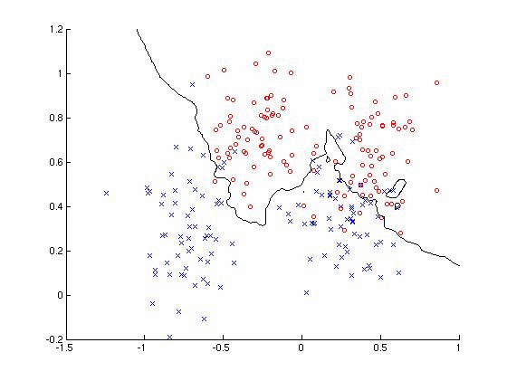
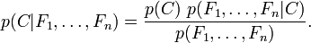
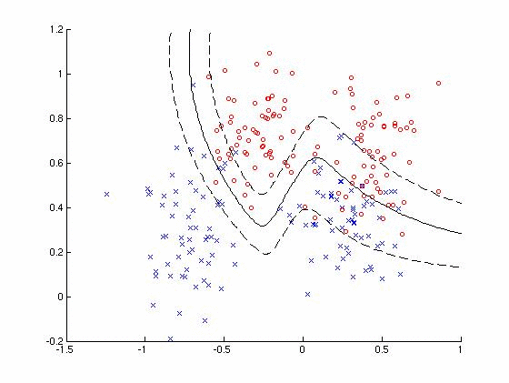
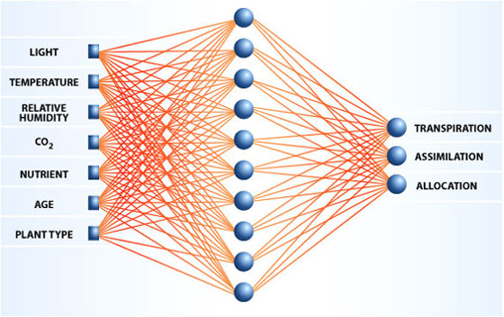

Data Mining Portfolio
Classification
Classification is a method in which data instances are predicted to a certain group. In order to apply this method, one must implement a classification algorithm on a training set of data. The training data allows the classification algorithm to 'learn' what probabilities can be applied to a subsequent testing data set. The test data can be compared to the actual results in order to determine the accuracy of the classifier. Accuracy though also depends on the type of classifier being used.

Decision Tree
A decision tree can be explained as a series of nodes in which each node branches off to other nodes until reaching the 'leaf' nodes, nodes that no longer branch off to other nodes. The nodes of the decision tree are essential decision factors that sends the current data instance down a branch to another node. This is continued until a data instance reaches a leaf node, meaning that what ever classification lies within that leaf node the new data instance will be classified as that as well. In order to build the decision tree, a training set must be implemented through the tree to initialize the nodes and the branches. This is where the decision tree method begins to become weak as if the decision tree over fits the training data then the classification will not work as it matches the training set too well. Pruning can be applied here to trim back on the nodes to make the decision tree more applicable for future classification. Forming the decision tree and pruning is very computationally expensive. However, the benefits of the decision tree can be that after training classification is very fast and easy to understand. The big support of the decision tree is the fact that it can handle both numerical and categorical data.
Rule Based
A rule based classifier classifies records by using a set of if...then... statements as rules. A rule covers an instance if the attributes of the instance satisfy the rule. Rules, however, can be generated for every instance in the data set which is a type of over fitting since all the rules would match the data almost exactly. A support count for each rule should be used in order to determine which rules meet a predetermined threshold for count. With a threshold placed on the support the rules can be pruned resulting in a rule set that should be able to accurately classify the testing data. The rule based classifier is extremely fast when classifying new data, but the rules generated may have to be checked in order to ensure accuracy.Nearest Neighbor
The nearest neighbor classifier, also known as the k-nearest neighbor, is a classifier based on the distance metric to compute distances between data instances. In order to classify a new data instance, the distance to the training data must be calculated, with these calculations a k centroid is determined. The k centroids will be essential for the classification of data as for the distances calculated from the test data will determine which k value to classify the test data to. Once again, the issue with this algorithm lies with in the value of k since the number of k values directly affects the type of classification. The data also needs to be scaled to prevent distant metrics from being dominated by one of the attributes. All together, this algorithm is a lazy learner as most of the computation is done with the classification and not the actual building of the classifier. Bayesian
 The bayesian classifier uses the principles of Baye's Theorem to classify data. The Bayesian classifier assumes that each presence or lack of presence of a particular attribute of a class is unrelated to that of any other attribute. For example, a type of fruit is classified as a banana because it is yellow, has a peel, and is rod shaped but no classified because it contains these specific attributes. The bayesian classifier has a strong set of advantages as it is robust to noise, robust to irrelevant data, missing data, and void attributes. Since the classifier does handle attributes separately the curse of dimensionality is reduced. Artificial Neural Network
The artificial neural network (ANN) is based on the functionality of the neural network of the brain. The set up of an ANN is the assembly of inter-connected nodes and weighted links. The output nodes sum up each of its input value according to the weights of its link. In order to train the ANN, the weights of the connections must be adjusted with each training set instance so that the output is consistent with the class labels of the training data. This can be done with the method of back propagation using the objective function: E = ∑[Y − f (w , X )]2 iii i ANN's are very popular in the machine learning industry as it closely resembles the learning process of humans. 
#!/bin/ruby
def acceptMove(gain, t)
k = 0.045
rand = Random.new
if(gain > 0)
return true
else
boltz = Math.exp(gain/(k*t))
r = rand.rand(0.0...1.0)
if(r < boltz)
return true
else
return false
end
end
end
def swap(a, b, array)
temp = array[a]
array[a] = array[b]
array[b] = temp
end
def getCost(array, size)
end
def gain(a, b)
d_a = 0
d_b = 0
c_ab = 0
a.connections.each do |i|
if (i.return_group == "A")
d_a = d_a - 1
elsif (i.return_group == "B")
d_a = d_a + 1
if(i.return_id == b.return_id)
c_ab = c_ab + 1
end
end
end
b.connections.each do |j|
if (j.return_group == "B")
d_b = d_b - 1
elsif (j.return_group == "A")
d_b = d_b + 1
if(j.return_id == a.return_id)
c_ab = c_ab + 1
end
end
end
return d_a + d_b - c_ab
end
#Calculates the activation function for weights and values
def activation(dendrites, nueron_number)
weights=Array.new
total_value=0
for i in 0...dendrites.size
value=dendrites[i].print_value
weights=dendrites[i].print_weight
total_value=total_value + (weights[nueron_number-1]*value)
end
return total_value
end
#calculates the sigmoidal function
def sigmoidal(activation_value)
neuron_value=1/(1 + 2.71828 ** activation_value)
return neuron_value
end
#Adjusting the weights from the second connections of hidden nodes to the outputs
def weight_adjustment_outputs(learning_rate,synapse,output_desired,neurons_array)
for i in 0...neurons_array.size
delta=Array.new
for j in 0...synapse.size
delta.push(-2*learning_rate*(synapse[j].print_value - output_desired[j])*synapse[j].print_value*(1-synapse[j].print_value)*neurons_array[i].print_value)
end
neurons_array[i].adjust_weight(delta)
end
end
#Adjusting the weights from the first connections of inputs and hidden nodes
def weight_adjustment_inputs(inputs,dendrites)
for i in 0...inputs.size
new_weights=Array.new
old_weights=Array.new
old_weights=dendrites[i].print_weight
for j in 0...old_weights.size
new_weights.push(inputs[i]*(1-inputs[i])*old_weights[j])
end
dendrites[i].adjust_weight(new_weights)
end
end
def build_network(inputs,outputs,training_iteration)
#Declaring the Synapse or outputs
synapse_1=Synapse.new
synapse_2=Synapse.new
synapse_3=Synapse.new
#Declairing the Dendrites or input nodes
dendrite_1=Dendrite.new
dendrite_2=Dendrite.new
dendrite_3=Dendrite.new
#Setting the value of the Dendrites
dendrite_1.value(inputs[0])
dendrite_2.value(inputs[1])
dendrite_3.value(inputs[2])
#Declairing the Neurons (hidden nodes)
neuron_1=Neuron.new
neuron_2=Neuron.new
connections_array=Array.[](neuron_1,neuron_2)
#Setting up the the connectiosn between dendrites and neurons
dendrite_1.axon(connections_array)
dendrite_2.axon(connections_array)
dendrite_3.axon(connections_array)
#Setting up the dendrite weights
if training_iteration == 0
dendrite_1.weight(connections_array)
dendrite_2.weight(connections_array)
dendrite_3.weight(connections_array)
end
#Printing the intial weights of the dendrites
puts "dendrite_1 #{dendrite_1.print_weight}"
puts "dendrite_2 #{dendrite_2.print_weight}"
puts "dendrite_3 #{dendrite_3.print_weight}"
#Storing all the dendrites in one location
dendrites_array=Array.[](dendrite_1,dendrite_2,dendrite_3)
#Obtaining the values for nuerons
neuron_1.value(dendrites_array,1)
neuron_2.value(dendrites_array,2)
#Setting up the connections between the neurons and synapses
connections2_array=Array.[](synapse_1,synapse_2,synapse_3)
neuron_1.axon(connections2_array)
neuron_2.axon(connections2_array)
#Setting up the neuron weights
if training_iteration == 0
neuron_1.weight(connections2_array)
neuron_2.weight(connections2_array)
end
#Printing the intial weights of the neurons
puts "neuron_1 #{neuron_1.print_weight}"
puts "neuron_2 #{neuron_2.print_weight}"
#Storing all the neurons in an array
neurons_array=Array.[](neuron_1,neuron_2)
#Obtaining the final out put values
synapse_1.value(neurons_array,1)
synapse_2.value(neurons_array,2)
synapse_3.value(neurons_array,3)
synapse_array=Array.[](synapse_1,synapse_2,synapse_3)
#Network Has Been Built
#Back Tracking
weight_adjustment_outputs(0.5,synapse_array,outputs,neurons_array)
weight_adjustment_inputs(inputs,dendrites_array)
#Printing the intial weights of the dendrites after backprop
puts "Results after backpropagation:"
puts "dendrite_1 #{dendrite_1.print_weight}"
puts "dendrite_2 #{dendrite_2.print_weight}"
puts "dendrite_3 #{dendrite_3.print_weight}"
#Printing the intial weights of the neurons after backprop
puts "Results after backpropagation:"
puts "neuron_1 #{neuron_1.print_weight}"
puts "neuron_2 #{neuron_2.print_weight}"
#Prinitng the Synapse values
for i in 0...synapse_array.size
puts "For Output Node #{i} the value is: #{synapse_array[i].print_value}"
end
end
require 'ann_functions.rb'
class Dendrite
value=0
axons=Array.new
weights=Array.new
#Sets the value of value
def value(value)
@value=value
end
#Returns the value of value
def print_value
return @value
end
#Filling the axon array (connection between dendrites and neurons)
def axon(connections)
@axons = connections
end
#Returns the values of axons
def print_axons
return @axons
end
#Filling the weight array
def weight(connections)
weight_array=Array.new
for x in 0...connections.size
weight_array[x]=(rand() * (rand(3)-1))
end
@weights = weight_array
end
#Returns the values of the weights
def print_weight
return @weights
end
#Weight adjustment
def adjust_weight(delta)
weight_array=Array.new
for x in 0...delta.size
weight_array[x]=delta[x]
end
@weights = weight_array
end
end
class Neuron
value=0
#bias=bias
axons=Array.new
weights=Array.new
error=0
#Setting the value of the neuron
def value(dendrites_array,num)
x=activation(dendrites_array,num)
@value=sigmoidal(x)
end
#Returns the value of value
def print_value
return @value
end
#Setting the connections
def axon(connections)
@axons=connections
end
#Returns the array of connections
def print_axons
return @axons
end
#Filling the weight array
def weight(connections)
weight_array=Array.new
for x in 0...connections.size
weight_array[x]=(rand() * (rand(3)-1))
end
@weights = weight_array
end
#Returns the values of the weights
def print_weight
return @weights
end
#Weight adjustment
def adjust_weight(delta)
weight_array=Array.new
for x in 0...delta.size
weight_array[x]=delta[x]
end
@weights = weight_array
end
end
class Synapse
value=value
error=0
#Setting the value of the neuron
def value(dendrites_array,num)
x=activation(dendrites_array,num)
@value=sigmoidal(x)
end
#Returns the value of value
def print_value
return @value
end
end
require 'nn.rb'
#Training Data
inputs=Array.[](1.0,0.25,-0.5)
outputs=Array.[](1.0,-1.0,0.0)
#0 is letting the function know that the network has not been built yet.
build_network(inputs,outputs,0)